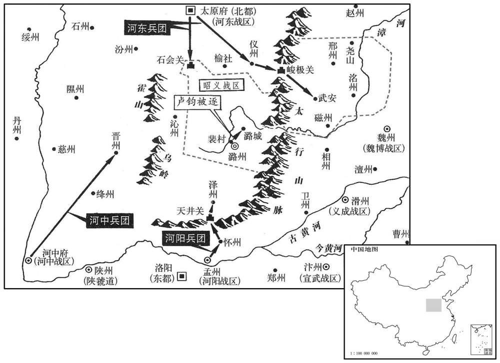

公元845年资治通鉴：本年记事、原文与白话对照
按原书编年位置阅读；追叙和史论不等于本年发生的事件。白话采用所据译本，缺译不以生成译文补齐。
卷248 · 本年记事
公元845年 · 唐武宗至道昭肃孝皇帝会昌五年
五年〔（乙丑、八四五）〕
上传原文的注释括号有异常，字符原样保留；无法可靠划分的段落默认全文显示。
本年事件索引（现代整理）
- 群臣为武宗上尊号，武宗谒太庙、祭昊天并大赦天下
- 朝廷在南郊修筑望仙台
- 义安太后王氏去世
- 卢弘宣任义武节度使，废除军中偶语斩刑并开仓赈济百姓
- 李绅审理江都令吴湘侵吞程粮钱及强娶民女案，吴湘被处死
- 李德裕任柳仲郢为京兆尹，柳仲郢表示愿效法牛僧孺门下
- 朝廷任李拭为出使黠戛斯册封可汗使
- 恭僖皇后葬于光陵柏城之外
- 杜悰、崔铉罢相，李回拜同平章事
- 祠部奏报全国寺院及僧尼数量
- 武宗册封黠戛斯可汗为宗英雄武诚明可汗
- 本月发生日食
- 武宗下令大规模拆毁寺院、勒令僧尼还俗并没收寺产
- 昭义乱兵拒绝远戍振武，卢钧避入潞城，朝廷部署诸道驻防
- 李德裕奏请修复东都太庙
- 武宗颁诏说明佛教弊端，公布毁寺及僧尼还俗数量
- 五台山僧人逃往幽州，李德裕劝张仲武不要收纳游僧
- 韦博认为毁佛不宜过度，李德裕将其调任灵武节度副使
- 昭义乱兵推李文矩为帅，李文矩劝其听命，卢钧随后处置哗变士卒
- 朝廷下诏修复东都太庙
- 李德裕奏请设置备边库，令户部、度支和盐铁每年拨款储备
- 武宗欲立王才人为皇后，李德裕以其出身和无子劝止
- 武宗服用方士金丹后性情暴躁，李德裕劝其天下既平应以宽治国
- 武宗任衡山道士刘玄静为崇玄馆学士，刘玄静辞官还山获准
- 李德裕秉政日久好恶用人，韦弘质批评宰相权重后被贬
- 武宗自秋冬以来患病，朝廷取消次年元旦朝会
- 论恐热再攻尚婢婢失败，尚婢婢檄告河湟诸部归唐
- 本年天下户口共四百九十五万五千一百五十一户
- 朝廷虽设安抚党项使职仍不能止其侵扰，武宗决定出兵

本年形势与背景参考图
春，正月，己酉朔，群臣上尊号曰仁圣文武章天成功神德明道大孝皇帝，尊号始无「道」字，中旨令加之。〔是时帝崇信道士赵归真等，至亲受道箓，故旨令群臣于尊号中加「道」字；而不知其所谓道者，非吾之所谓道也。〕庚戌，上谒太庙；辛亥，祀昊天上帝，赦天下。
春季，正月，己酉朔（初一），满朝大臣给唐武宗上尊号，称仁圣文武章天成功神德明道大孝皇帝，尊号起初并没有“道”字，唐武宗崇信道教，中间下旨命令群臣加上道字。庚戌（初二），唐武宗行谒太庙之礼；辛亥（初三），唐武宗又祭祀昊天上帝，宣诏大赦天下。
筑望仙台于南郊。
在南郊筑望仙台。
庚申，义安太后王氏崩。〔太和五年，宰相建白，以太皇太后与宝历太后称号未辨，前代诏令不敢斥言，皆以宫为称。今宝历太后居义安殿，宜曰义安太后。诏可。〕
庚申（十二日），义安太后王氏驾崩。
以秘书监卢弘宣为义武节度使。弘宣性宽厚而难犯，为政简易，〔易，以豉翻。〕其下便之。河北之法，军中偶语者斩；弘宣至，除其法。〔河北诸帅防其下相与聚谋以图己，故严军中偶语之法，以刚制之。卢弘宣至中山，乃除其法。〕诏赐粟三十万斛，在飞狐西，计运致之费踰于粟价，弘宣遣吏守之。会春旱，弘宣命军民随意自往取之，粟皆入境，约秋稔偿之。时成德、魏博皆饥，独易定之境无害。
朝廷任秘书监卢弘宣为义武节度使。卢弘宣性情宽厚，而态度严肃，人们不敢冒犯，为政比较简易，其部下称便。按河北的法规，军队中相对私语者就要斩首；卢弘宣来到义武镇，废除这种残酷的法规。唐武宗下诏赐给义武粟米三十万斛，存放在飞狐之西，从飞狐将这些粟米运至义武镇，所需费用超过粟米本身的价值，卢弘宣于是派遣官吏至飞狐仓加以看守。恰值春季大旱，卢弘宣命令义武军民自己随意往飞狐仓领取粟米，使粟米全部运入义武辖境，卢弘宣又向得到粟米的军民相约，待到秋天粮食丰收时再向官府偿还。当时成德和魏博两镇也都因旱灾发生饥馑，唯独义武节度使卢弘宣所辖的易定境内没有出现饥馑灾害。
淮南节度使李绅按江都令吴湘盗用程粮钱，〔新书百官志：主客郎中，主蕃客。东南蕃使还者，给入海程粮；西北蕃使还者，给度碛程粮。至于官吏以公事有远行，则须计程以给粮，而粮重不可远致，则以钱准估，故有程粮钱。强娶所部百姓颜悦女，估其资装为脏，罪当死。湘，武陵之兄子也，〔吴武陵见二百三十九卷宪宗元和十年。〕李德裕素恶武陵。〔恶，乌路翻。〕议者多言其冤，谏官请覆按，诏遣监察御史崔元藻、李稠覆之。还言：「湘盗程粮钱有实；颜悦本衢州人，尝为青州牙推，妻亦士族，与前狱异。」德裕以为无与痔，二月，贬元藻端州司户，稠汀州司户。不复更推，亦不付法司详断，即如绅奏，处湘死。〔复，扶又翻。断，丁乱翻。处，昌吕翻。为德裕以吴湘狱致祸张本。〕谏议大夫柳仲郢、敬晦皆上疏争之，不纳。稠，晋江人；〔宋白曰：泉州治晋为晋安县地，隋废郡为邑。〕晦，昕之弟也。〔敬昕见上卷三年。〕
淮南节度使李绅按查所部江都县令吴湘，说他擅自盗用官家因公出差用的程粮钱，并强横逼娶管下百姓颜悦的女儿，将他家的资产衣装估价作为赃款，论其罪当处死刑。吴湘是吴武陵哥哥的儿子，李德裕平素就厌恶吴武陵。议论此案的人都声言吴湘冤枉，谏官于是向唐武宗请求重新审理，唐武宗颁下诏书，派遣监察御史崔元藻、李稠复审此案。崔元藻、李稠经过复查，回奏朝廷说：“吴湘偷盗税粮钱实有其事；而颜悦这个人本是衢州人，曾经任青州牙推官，他的妻子也是士族，情况与初审论罪事实有异。”李德裕认为崔元藻和李稠论事模棱两可，没有给吴湘定重罪论死刑，二月，朝廷将崔元藻贬为端州司户，李稠贬为汀州司户。对吴湘案不再复审，也不交付司法官署依法详细判罪论刑，即按照李绅所奏，将吴湘处死。谏议大夫柳仲郢、敬晦都上疏论争，均不被采纳。李稠是晋江人；敬晦是敬昕的弟弟。
李德裕以柳仲郢为京兆尹；素与牛僧孺善，谢德裕曰：「不意太尉恩奖及此，仰报厚德，敢不如奇章公门馆！」德裕不以为嫌。〔隋封牛弘为奇章公，牛僧孺盖其后也，故时人亦呼之为奇章公。宋白曰：奇章县属巴州，本汉葭萌县地，梁置奇章县，取县东八里奇章山为名。〕
李德裕提拔柳仲郢任京兆尹；柳仲郢平素与牛僧孺相友善，于是向李德裕道谢说：“想不到李太尉对我如此恩奖，为报答您的厚德，我怎敢不再去奇章公牛僧孺的门馆呢！”李德裕对这些话并不以为嫌。
夏，四月，壬寅，以陕虢观察使李拭为册黠戛斯可汗使。〔陕，失冉翻。〕
夏季，四月，壬寅（二十六日），朝廷任命陕虢观察使李拭为册封黠戛斯可汗使。
五月，壬戌，葬恭僖皇后于光陵柏城之外。〔义安太后谥曰恭僖。后于穆宗非伉俪，故陪葬光陵而不合。〕
五月，壬戌（十六日），唐武宗命将唐穆宗恭僖皇后安葬于光陵的柏城之外。
门下侍郎、同平章事杜悰罢为右仆射，中书侍郎、同平章事崔铉罢为户部尚书。乙丑，以户部侍郎李回为中书侍郎、同平章事，判户部如故。
门下侍郎、同平章事杜被唐武宗罢相，改任右仆射，中书侍郎、同平章事崔铉也被罢相，改领户部尚书衔。乙丑（十九日），唐武宗任命户部侍郎李回为中书侍郎、同平章事，依旧叛户部。
祠部奏括天下寺四千六百，兰若四万，僧尼二十六万五百。〔祠部掌僧尼，故使括之。若，人者翻。释氏要览曰：兰若者，梵言阿兰若，唐言无诤也；四分律云，空静处；智度经云，远离处；大悲经云，离诸忿。〕
祠部上奏朝廷，全国有佛教寺院四千六百座，小佛祠四万，僧尼有二十六万五百人。
诏册黠戛斯可汗为宗英雄武诚明可汗。
唐武宗册封黠戛斯可汗为宗英雄武诚明可汗。
秋，七月，丙什朔，日有食之。
秋季，七月，丙午朔（初一），出现日食。
上恶僧尼耗蠹天下，欲去之，〔恶，乌路翻。去，羌吕翻。〕道士赵归真等复劝之；〔复，扶又翻。〕乃先毁山野招提、兰若，〔释书曰：招提、菩萨，皆佛名，故号寺或谓之招提。增辉记曰：「招提者，梵言拓鬬提奢，唐言四方僧物。后人传写之误，以「拓」为「招」，又省去「鬬奢」二字，只称招提，即今十方寺院是也。萨波论云：西天度地以四肘为一弓，去村店五百弓不远不近，以闲静为兰若。史照曰：今若以唐尺计之，度二里许。〕敕〔【章：十二行本「敕」上有「至是」二字；乙十一行本同；孔本同；张校同。】〕上都、东都两街各留二寺，〔唐谓长安曰上都。时左街留慈恩、荐福，右街留西明、庄严。〕每寺留僧三十人；天下节度观察使治所及同、华、商、汝州各留一寺，〔华，户化翻。〕分为三等：上等留僧二十人，中等留十人，下等五人。〔考异曰：实录：「中书门下奏请上都、东都两街各留寺十所，每寺留僧十人，大藩镇各一所，僧亦依前诏。敕上都、东都每街各留寺两所，每寺僧各留三十人。中书门下奏，『奉敕诸道所留僧尼数宜令更商量，分为三等：上至二十人，中至十人，下至五人。今据天下诸道共五十处四十六道，合配三等：镇州、魏博、淮南、西川、山南东道、荆南、岭南、汴宋、幽州、东川、鄂岳、浙西、浙西、浙东、宣歙、湖南、江西、河南府，望每道许留僧二十人；山南西道、河东、郑滑、陈许、潞磁、郓曹、徐泗、凤翔、兖海、沧景、易定、福建、同、华州，望令每道许留十人；夏桂、邕管、黔中、安南、汝、金、商州、容管，望每道许留五人；一道河中已敕下留十三人。』按镇州等凡五十六州，四十一道，今云五十处四十六道，误也。杜牧杭州南亭记曰：「武宗即位，始去其山台野邑四万所，冠其徒几至十万人。后至会昌五年，始命西京留佛寺四，僧惟十人；东都二寺。天下所谓节度观察、同、华、汝三十四治所得留一寺，僧准西京数；其怹刺史州不得有寺。凡除寺四千六百，僧、尼笄冠二十六万五百。」实录注又云：按唐时石刻云，「两都留寺僧各十人；郡国留寺二，僧各三人。」数皆不同。今从实录前文。〕余僧及尼并大秦穆护、祅僧皆勒归俗。〔大秦穆护又释氏之外教，如回鹘摩尼之类。是时敕曰：「大秦穆护等祠，释教既已厘革，邪法不可独存。其人并勒还俗，递归本贯，充税户；如外国人送远处收管。」祅，呼烟翻，胡神也。唐制：祠部岁再祀碛西诸州火祅，而禁民祈祭。官品令有祅正，盖主祅僧也。〕寺非应留者，立期令所在毁撤，仍遣御史分道督之。财货田产并没官，寺材以葺公廨驿舍，〔廨，古隘翻。〕铜像、锺磬以铸钱。
唐武宗厌恶象蠹虫一样耗费天下财物的和尚和尼姑，企图将他们罢废还俗。道士赵归真等人又竭力劝武宗废佛。于是唐武宗下令先拆毁山野之间的寺庙，上都长安和东都洛阳的左、右两街各留佛寺两所，每个寺院留僧侣三十人；天下各镇凡节度使、观察使的治所以及同州、华州、商州、汝州各留一所佛寺，将佛寺分为三等：上等可留僧侣二十人，中等可留僧侣十人，下等可留僧侣五人。其余僧侣及尼姑以及大秦穆护（摩尼教）、袄教僧人也一并勒令还俗。寺庙除应该留下的以外，立即命令所在官府拆毁，并且由朝廷派遣御史到各道去进行监督。佛寺的财产、田产全部没收入官府，寺庙的建筑材料用以修缮公家的官舍和驿站的房屋，佛教铜像、钟磐等器物熔化后用以铸造钱币。
诏发昭义骑兵五百、步兵千五百戍振武，节度使卢钧出至裴村饯之；潞卒素骄，惮于远戍，乘醉，回旗入城，闭门大噪，钧奔潞城以避之。〔宋白曰：潞城县，春秋潞子婴儿之国，汉为潞县。十三州志云：潞水出焉。后魏太武改为刈陵县，隋开皇十三年置潞城县。九域志：潞城在潞州东北四十里。〕监军王惟直自出晓谕，乱兵击之，伤，旬日而卒。李德裕奏：「请诏河东节度使王宰以步骑一千守石会关，三千自仪州路据武安，以断邢、洺之路；〔断，音短。〕又令河阳节度使石雄引兵守泽州，河中节度使韦恭甫发步骑千人戍晋州。如此，贼必无能为。」〔分守四境，使潞之乱卒不得越逸而奔他镇。〕皆从之。
唐武宗下诏调发昭义骑兵五百、步兵一千五百人戍守振武，昭义节度使卢钧出城行至裴村为戍卒饯行；潞州士卒素来骄横，害怕出门远戍，乘着酒醉，举旗回到上党城，关闭城门大声喧噪，卢钧逃奔于潞城以躲避军乱。昭义监军王惟直亲自出来晓以大义，对乱军进行劝谕，乱兵竟大打出手，将王惟直击伤，十天后死去。李德裕为此上奏唐武宗说：“请皇上下诏命令河东节度使王宰率步、骑兵一千人守石会关，派三千人自仪州的道路去据守武安，以便截断潞州去邢州、州的道路；再命令河阳节度使石雄率领军队驻守泽州，河中节度使韦恭甫调发步、骑兵一千人戍守晋州。这样的话，叛贼必定无所作为。”唐武宗接受了这些建议。
八月，李德裕等奏：「东都九庙神主二十六，今贮于太微宫小屋，〔玄宗天宝二年，改东都玄元皇帝庙曰太微宫。刘咰曰：东都太微宫本武后家庙。神龙初，中宗反正，废武氏庙主，立太祖已下神主祔主。安禄山陷洛阳，以庙为马貛，弃其神主，协律郎严郢收而藏之。史思明再陷洛阳，寻又散失。贼平，东都留守卢正己又募得之。庙已焚毁，乃寄主于太微宫。贮，丁吕翻。〕请以废寺材复修太庙。
八月，李德裕等人向唐武宗奏言：“东都洛阳九庙有高祖以来神主二十六尊，现在贮藏在太微宫小屋子里，请求用拆毁佛寺所得的木材来修复太庙。”
壬午，诏陈释教之弊，宣告中外。凡天下所毁寺四千六百余区，归俗僧尼二十六万五百人，大秦穆护、祅僧二千余人，毁招提、兰若四万余区。〔考异曰：会要：元和二年，薛平奏请赐中条山兰若额为大和寺。盖官赐额者为寺，私造者为招提、兰若，杜牧所谓「山台野邑」是也。〕收良田数千万顷，奴婢十五万人。所留僧皆隶主客，不隶祠部。〔时中书门下奏：「据大唐六典，祠部掌天地宗庙大祭，与僧事殊不相当。〕又万务根本合归尚书省，隶鸿胪寺亦未为允当。又据六典，主客掌朝贡之国七十余蕃，五天竺国并在数内。释氏出自天竺国，今陛下以其非中国之教，已有厘革。僧尼名籍便令系主客，不隶祠部及鸿胪寺，至为允当。」从之。〕百官奉表称贺。寻又诏东都止留僧二十人，诸道留二十人者减三人，留五人者更不留。
本段缺少可靠对应白话，原文完整保留；未使用生成译文。
五台僧多亡奔幽州。〔五台在代州五台县，山形五峙，相传以为文殊示现之地。华严经疏云：清凉山者，即代州鴈门五台山也。以岁积坚冰，夏仍飞雪，曾无炎暑，故曰清凉。五峰耸出，顶无林木，有如垒土之台，故曰五台。古传云：山在长安东北一千六百余里，代州之所管。山顶至州城一百余里。其山左邻恒山，右接天池，南属五台县，北至繁时县，环基所至五百余里。灵记云：五台山有四埵，去台各一百二十里。据古经所载，今北台即是中台，中台即是南台，大黄尖即是北台，栲栳山即是西台，漫天石即是东台。惟北台、中台古时无异，东台、西台古今无别。无恤台，恒山顶是也。昔赵襄子名无恤，曾登此山观代国，下瞰东海。西瞢粐山，有宫池古庙；隋炀帝避暑于此而居，因天池造立宫室，龙楼凤阁，遍满池边，号为西埵。南系舟山，上有铜环，船轴犹在。昔帝尧遭水，系舟于此。世传文殊见于南台，号为南埵。北有覆宿堆，即夏屋山也；后魏孝文皇帝避暑往复宿此，下见云州，谓之北埵。中台稍近西北，有太华泉，有古寺二十余处。东台去太华泉四十二里，台上遥见沧、瀛诸州；日出时，下视大海犹陂泽焉，有古寺十五处。西台去太华泉四里，危嶝千云，乔林拂日，有古寺十二处。南台去太华泉八十里，最为幽寂，有古寺九处。北台去太华泉十二里，有古寺八处，唐末所添寺不在其数。五台县本汉虑虒县。虑虒，音驴夷。隋大业二年改为五台县。〕李德裕召进奏官谓曰：「汝趣白本使，〔趣，读曰促。〕五台僧为将必不如幽州将，为卒必不如幽州卒，何为虚取容纳之名，染于人口！〔将，即亮翻。染，如艳翻，又而险翻。〕独不见近日刘从谏招聚无算闲人，竟有何益！」张仲武乃封二刀付居庸关曰：「有游僧入境则斩之。」
五台山的僧侣有很多逃亡投奔幽州。李德裕召来幽州的进奏官，对他说：“你回去告诉你的节度使，五台山的僧人充当将领必定不如幽州的将领，为士卒也必定不如幽州的士卒，为何要凭白无故地得一个容纳僧侣的恶名，而成为人家的口实！你没有看见不久前刘从谏招纳收聚无数的闲人，最终有什么好处！”幽州节度使张仲武于是将两把刀封好送给居庸关的守将，宣称：“若有游僧进入幽州之境，一概斩首。”
主客郎中韦博以为事不宜太过，李德裕恶之，〔恶，乌路翻。〕出为灵武节度副使。
主客郎中韦博认为毁佛之事不应做得太过份，李德裕深感厌恶，将韦博贬谪为灵武节度副使。
昭义乱兵奉都将李文矩为帅；〔帅，所类翻。〕文矩不从，乱兵亦不敢害。文矩稍以祸福谕之，乱兵渐听命，乃遣人谢卢钧于潞城。钧还入上党，复遣之戍振武；行一驿，乃潜选兵追之；明日，及于太平驿，〔唐制：三十里一驿。太平驿在潞州北六十里。宋白曰：太平驿东南距潞州八十里。〕尽杀之。〔考异曰：献替记：「上信任宰臣，无不先访问，无独断之事。唯诛讨泽潞，不肯拾赴振武官健及诛翦党项，此二事并禁中发诏处分，更不顾问。振武官健回旗，不肯进发，先害监军傔一人，监军王惟直自出晓谕，又被伤痍，旬日而卒。禁中两军枢密已下，恨其不杀节将，唯害中人。所以激上之怒，尽须剿戮。上问宰臣曰：『我送石雄领兵至泽潞，令卢钧不诛讨罪人，如何﹖』德裕曰：『卢钧已失律，性又宽譩，必恐自诛不得。若便替却卢钧，乱卒罪恶转大，须兴兵讨伐。恐不如先除替，令新帅诛翦。』上谓德裕曰：『勿惜卢钧！本非材将。救泽潞叛兵，疑李丕报嫌。往刘稹平后，处置泽潞与刘稹同恶，仅五千余人，皆是取得高文端、王钊状，通姓名，勘李丕状同，然后处分。其间有三两人或王钊状无名，并不更问，足明是李丕不能逞其憾。』又云：『惟务苟安、因循为政。凡方镇发兵，只合不出军城，严兵自卫，于城门阅过部伍，更令军将慰安。岂有自出送兵马，又令家口纵观！事同儿戏，实不足惜！』『缘大兵之后，须有防虞，臣不敢隐默。』由是中诏处分，不复顾问。」按卢钧还入潞州，谕戌兵使赴振武，寻遣兵追击，尽杀之，非上不肯舍也。既云「不可便替」，又云「不如先除替」，语自相违，上云「勿惜卢钧」，是上语，下云「臣不敢隐默」，乃是德裕语。献替记至此差舛尤甚，不可复据。又处置泽潞五千余人太多，必是「五十」字误耳。〕具以状闻，且请罢河东、河阳兵在境上者，从之。
]昭义乱兵推举都将李文矩为帅；李文矩不从命，乱兵也不敢加害。李文矩趁机对乱军进行一些劝谕，晓以祸福，乱兵渐渐听命，于是派人到潞城向卢钧谢罪。卢钧回到上党城，再派遣这些士卒往振武镇去戍守；走过一个驿程，卢钧暗中挑选兵追赶这些士卒，第二天，至太平驿追及，将曾参与叛乱的士兵全部杀死。卢钧又将情况写成状文向朝廷汇报，并且请求罢除河东、河阳在昭义边境防驻守的军队，朝廷一概听从。
九月，诏修东都太庙。〔如李德裕所奏也。〕
九月，唐武宗下诏修复东都太庙。
李德裕请置备边库，令户部岁入钱帛十二万缗匹，度支盐铁岁入钱帛十二万缗匹，明年减其三之一凡诸道所进助军财货皆入焉，以度支郎中判之。
李德裕向唐武宗请求设置备边仓库，命令户部每年输入钱、帛十二万缗、匹，度支使和盐铁使每年输入钱、帛十二万缗、匹，第二年减少其三分
之一的输入，全国诸道所进的助军财产财物也都输入备边仓库，任命度支郎中
来掌管这项事务。
王才人宠冠后庭，〔冠，古玩翻。〕上欲立以为后；李德裕以才人寒族，且无子，恐不厌天下之望，〔厌，益涉翻，伏也，合也。〕乃止。
唐武宗的王才人在后宫最得武宗喜爱，唐武宗想立王才人为皇后；李德裕认为王才人出身寒族，而且没有生儿子，恐怕不合天下人的愿望，因而上言劝阻，唐武宗于是放弃了这一想法。
上饵方士金丹，性加躁急，喜怒不常。冬，十月，上问李德裕以外事，对曰：「陛下威断不测，〔断，丁乱翻。〕外人颇惊惧。向者寇逆暴横，〔横，户孟翻。〕固宜以威制之；今天下既平，愿陛下以宽理之，但使得罪者无怨，为善者不惊，则为宽矣。」
唐武宗吃下道教方士炼的金丹，性情更加暴躁，喜怒无常。冬季，十月，唐武宗问李德裕朝外之事，李德裕回答说：“您的严厉决断人们难以猜测，朝外人士感到很惊诧和恐惧。以前贼寇叛逆专横暴虐，当然应该用严厉的威邢来制服他们；但如今天下既已平定，希望您能以宽容治理政事，如果能使犯罪的人服罪无怨言，为善的人不感到惊慌恐怖，那就能称得上为政宽容了。”
以衡山道士刘玄静为银青光禄大夫、崇玄馆学士，赐号广成先生，为之治崇玄馆，置吏铸印。〔唐有崇玄署令，掌僧道，属宗正寺。又有崇玄学博士，掌教玄学生。玄宗天宝二年改崇玄学曰崇玄馆，改博士曰学士。为之，于伪翻。治，直之翻。〕玄静固辞，乞还山，许之。
唐武宗任命衡山道士刘玄静为银青光禄大夫、崇玄馆学士，赐号广成先生，为他建崇玄馆，并署置吏员，铸有印章。刘玄静坚决推辞，乞求让他回衡山继续修道，唐武宗同意了他的请求。
李德裕秉政日久，好徇爱憎，〔好，呼到翻。〕人多怨之。自杜悰、崔铉罢相，宦官左右言其太专，上亦不悦。给事中韦弘质上疏，言宰相权重，不应更领三司钱谷。德裕奏奏称：「制置职业，人主之柄。弘质受人教导，所谓贱人图柄臣，〔传曰：下轻其上爵，贱臣图柄臣，则国家动摇，而人不静。〕非所宜言。」十二月，弘质坐贬官，由是众怒忥甚。〔史言李德裕以自专自用速祸。〕
李德裕掌权的时间久了，喜欢根据自己的好恶处置官吏，使很多人心怀怨言。自从杜、崔铉罢免相位后，宦官在唐武宗左右说李德裕太专权，唐武宗也感到不高兴。给事中韦弘质上疏于唐武宗，声言宰相的权力太重，不应该再掌管户部、度支、盐铁三司的钱谷。李德裕为此也上奏唐武宗，声称：“任
用官员，本是皇帝的权柄。韦弘质受人教唆，竟然对皇帝赋予宰相的权力妄持异议，真是卑贱人企图谮害掌有权柄的大臣，这些话哪里是韦弘质这种人可以妄说的呢！”十二月，韦弘质为此贬官，于是众朝臣大抱不平，怨怒更甚。
上自秋冬以来，觉有疾，而道士以为换骨。上秘其事，外人但怪上希复游猎，〔复，扶又翻；下同。〕宰相奏事者亦不敢久留。诏罢来年正旦朝会。〔以有疾也。〕
唐武宗自从秋冬之际以来，感觉患有疾病，而道士却认为是换骨。唐武宗将疾病隐瞒起来，宫禁之外的朝臣只是奇怪唐武宗很少出来游猎，宰相入朝奏事也不敢停留太久。武宗又下诏书停罢明年元旦的大朝会。
吐蕃论恐热复纠合诸部击尚婢婢，婢婢遣厖结藏将兵五千拒之，恐热大败，与数十骑遁去。婢婢传檄河、湟，数恐热残虐之罪〔数恐，所具翻。〕曰：「汝辈本唐人，吐蕃无主，则相与归唐，毋为恐热所猎如狐兔也！」于是诸部从恐热者稍稍引去。
吐蕃的论恐热又纠合诸部落攻击吐蕃宰相尚婢婢，尚婢婢派遣结藏率领五千兵进行抵抗，论恐热被打得大败，只与数十个骑兵逃走。尚婢婢传布檄文于河、湟地区，历数论恐热的残忍暴虐罪行，说：“你们本来都是大唐的臣民，吐蕃没有了国王，你们应该相互联结归奉唐朝，不应该被论恐热所控制，象狐狸抓免子一样！”于是河、湟地区汉人诸部民跟从论恐热者，逐渐离他而去。
是岁，天下户四百九十五万五千一百五十一。
这一年，全国共有四百九十五万五千一百五十一户。
朝廷虽为党项置使，〔帝以侍御史为使，分三部招定党项，以邠、宁、延属崔彦曾，盐、夏、长泽属李鄠，灵武、麟、胜属郑贺。〕党项侵盗不已，攻陷邠、宁、盐州界城堡，屯叱利寨。宰相请遣使宣慰；上决意讨之。
唐朝廷虽然为对付党项设置了三处使职，但党项部族仍然侵盗唐边境不已，攻陷唐州、宁州、盐州边境的城堡，屯兵于叱利寨。宰相请求唐武宗派遣使者宣慰招抚，但唐武宗决意要派军队讨伐。
译本中未与胡注本可靠对应的内容
以下另列供核对版本差异，不并入胡注本正文。
译本所附古文
[14]以山南东道节度使郑肃检校右仆射、同平章事。
译本白话
唐武宗任命山南东道节度使郑肃为检校右仆射、同平章事。
译本所附古文
[17]壬午，诏陈释教之弊，宣告中外。凡天下所毁寺四千六百余区，归俗僧尼二十六万五百人，大秦穆护、袄僧二千余人，毁招提、兰若四万余区。收良田数千万顷，奴婢十五万人。所留僧皆隶主客，不隶祠部。百官奉表称贺。寻又诏东都止留僧二十人，诸道留二十人者减其半，留十人者减三人，留五人者更不留。
译本白话
壬午（初七），唐武宗下诏陈述佛教的危害弊端，并宣告朝廷内外。在全国范围内拆毁佛寺四千六百余区，勒令还俗的僧侣、尼姑有二十六万零五百人，大秦穆护（摩尼教）、袄教僧人也有二千余人，又拆毁大小佛祠四万余区。从寺院收得良田数千万顷，收得寺院奴婢十五万人。其余所留下的僧侣都隶属于尚书省礼部主客郎中管辖，而不再隶属于尚书省礼部祠部郎中。对于上述处置，朝廷百官都奉表称赞庆贺。不久，唐武宗又命令东都只留僧侣二十人。诸道原留僧侣二十人者减去一半，留十人者减去三人，留五人者全部减去，一个不留。